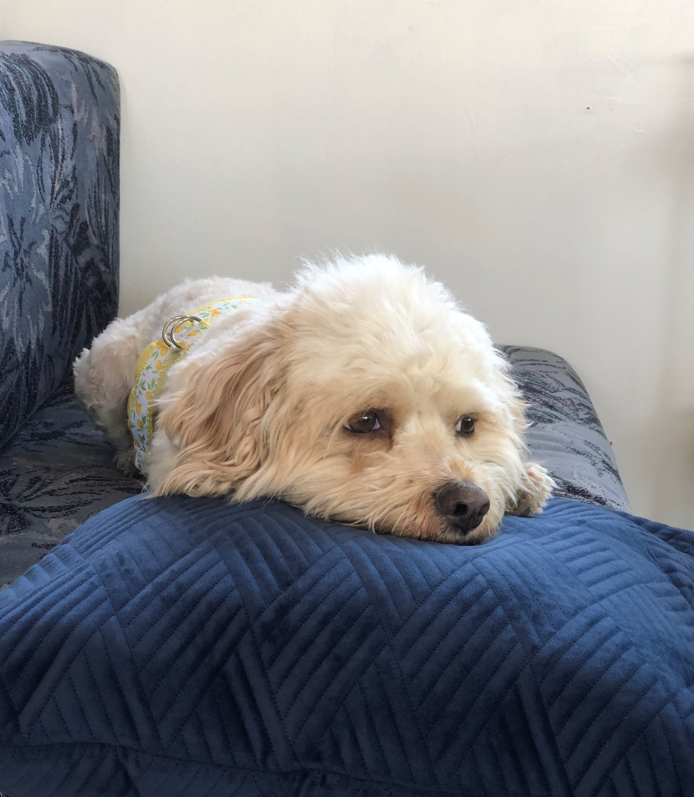

McLibby Adventures!
Welcome to our RV travel blog!
About Us
Mike

Mike was born in London in 1966. He relocated to Galway, Ireland when he was 12. After finishing school he went and received formal training to become a chef. He relocated to San Francisco, California in 1989. Shortly after he found himself in Los Angeles and that's where he met Lisa!
Lisa

Lisa was born in Inglewood, California in 1961. She spent all of her childhood and adult life in Torrance, California. She was a trained hairdresser in Los Angeles. In December of 1990, while out on the town, she met a charming young irishman. That irishman was Mike!
Ginger
Ginger joined our family in 2017! When she joined she was roughly 2 years old. We don't know what breed she is exactly, but our best guess is CavaPoo!
What We're Rolling In
1998 Tioga Montara